主動式 ETF 依基金・00981A 統一台股增長（資料日 2026-11-20）下載 PNG
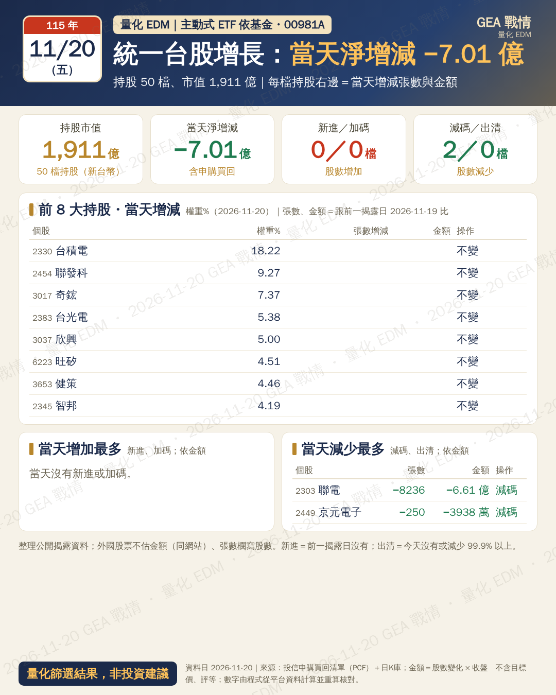
核對通過 00981A：2 筆金額用 PCF 原檔股數差 × daily.npz 收盤重算、標的集合比對、加總＝基金淨額；8 檔權重對 PCF 2026-11-20 原檔
・正式版同一段 build()
主動式 ETF 依基金・00406A 中信台灣收益（資料日 2026-11-20）下載 PNG
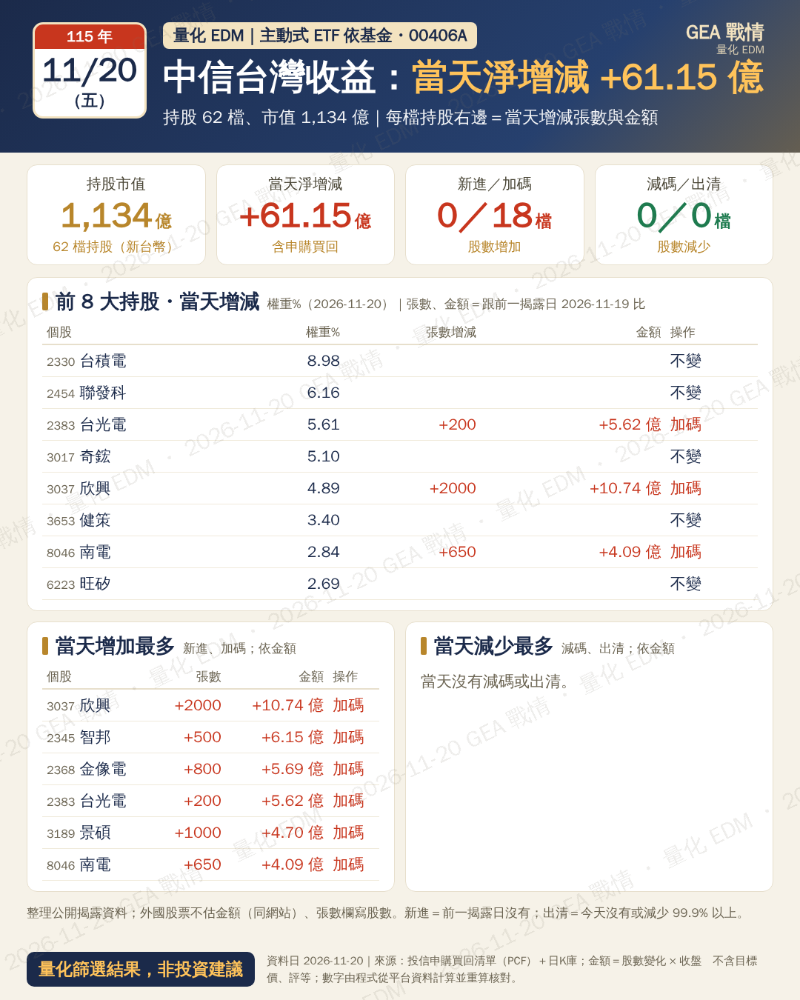
核對通過 00406A：18 筆金額用 PCF 原檔股數差 × daily.npz 收盤重算、標的集合比對、加總＝基金淨額；8 檔權重對 PCF 2026-11-20 原檔
・正式版同一段 build()
主動式 ETF 依基金・00403A 統一升級50（資料日 2026-11-20）下載 PNG
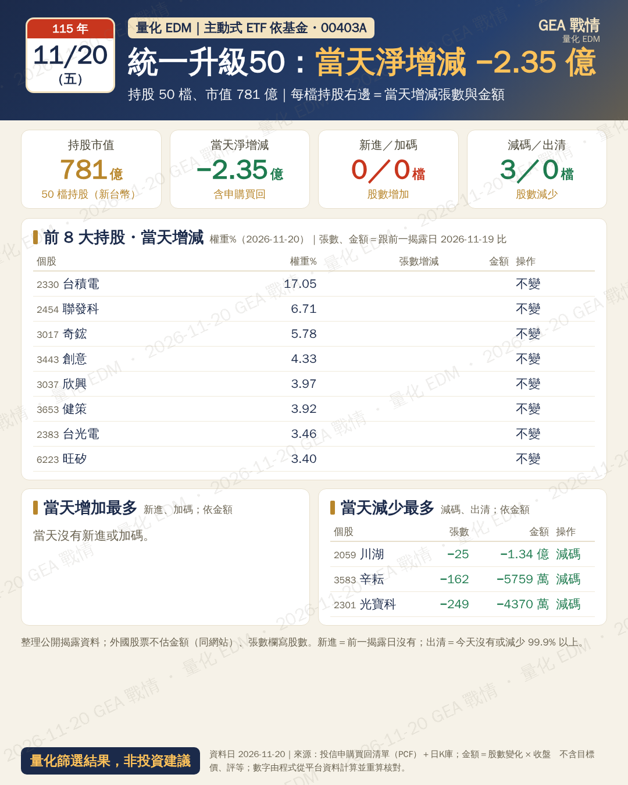
核對通過 00403A：3 筆金額用 PCF 原檔股數差 × daily.npz 收盤重算、標的集合比對、加總＝基金淨額；8 檔權重對 PCF 2026-11-20 原檔
・正式版同一段 build()
主動式 ETF 依基金・00991A 復華未來50（資料日 2026-11-20）下載 PNG
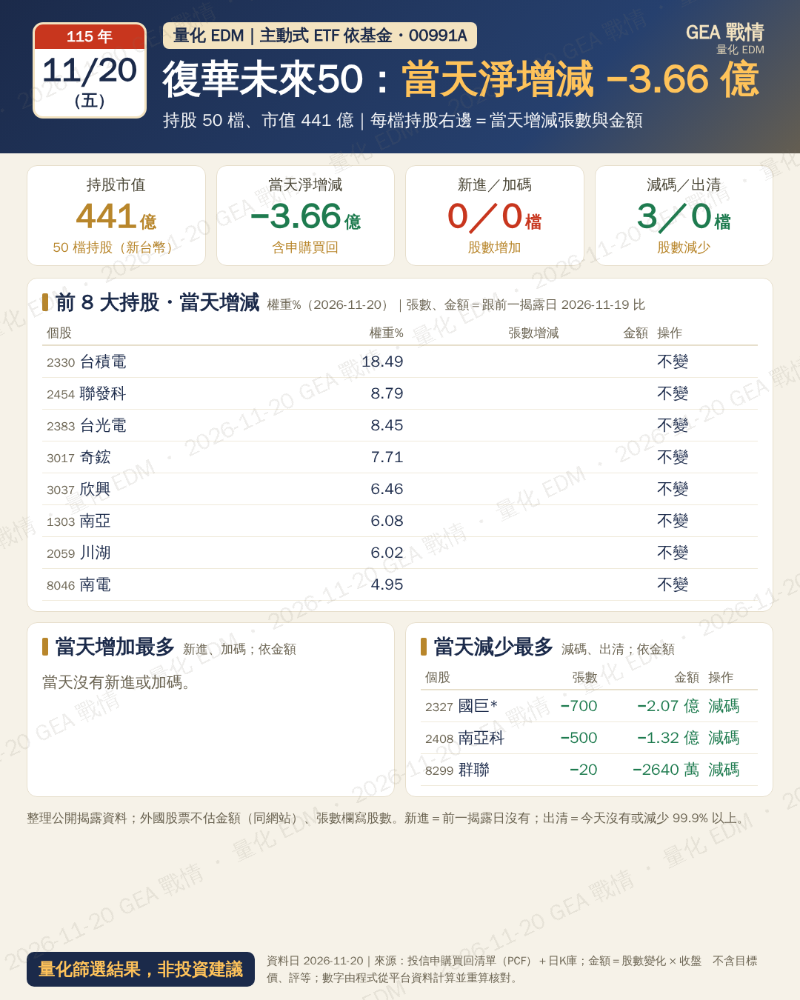
核對通過 00991A：3 筆金額用 PCF 原檔股數差 × daily.npz 收盤重算、標的集合比對、加總＝基金淨額；8 檔權重對 PCF 2026-11-20 原檔
・正式版同一段 build()
主動式 ETF 依基金・00982A 群益台灣強棒（資料日 2026-11-20）下載 PNG
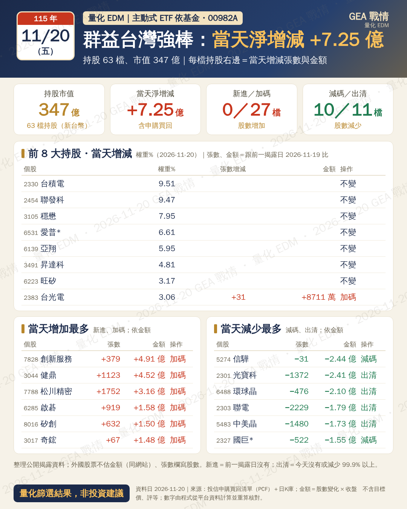
核對通過 00982A：48 筆金額用 PCF 原檔股數差 × daily.npz 收盤重算、標的集合比對、加總＝基金淨額；8 檔權重對 PCF 2026-11-20 原檔
・正式版同一段 build()
主動式 ETF 依基金・00988A 統一全球創新（資料日 2026-11-19）下載 PNG
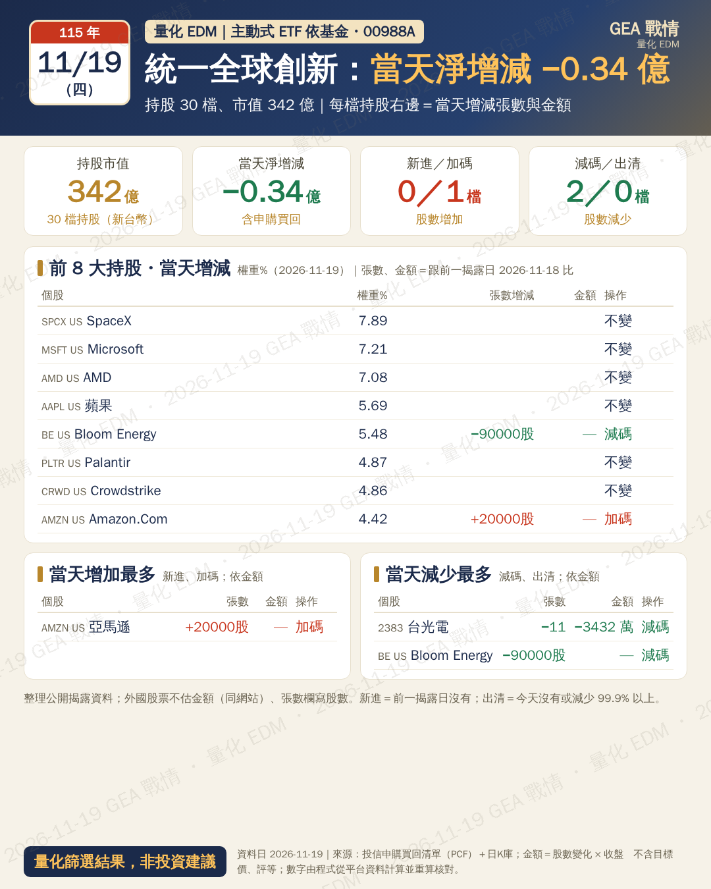
核對通過 00988A：1 筆金額用 PCF 原檔股數差 × daily.npz 收盤重算、標的集合比對、加總＝基金淨額；8 檔權重對 PCF 2026-11-19 原檔
・正式版同一段 build()
主動式 ETF 依基金・00992A 群益科技創新（資料日 2026-11-20）下載 PNG
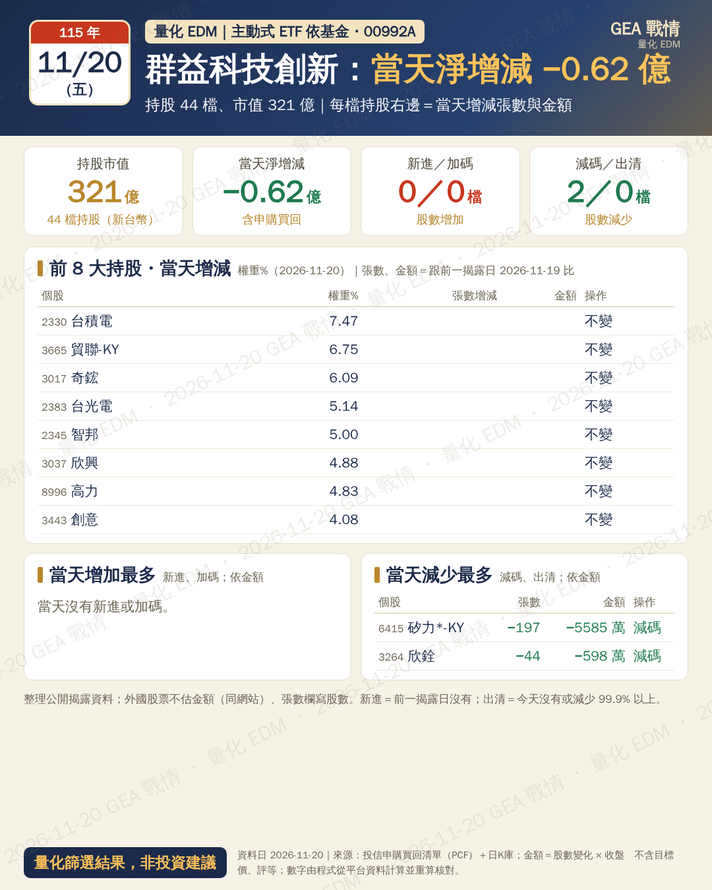
核對通過 00992A：2 筆金額用 PCF 原檔股數差 × daily.npz 收盤重算、標的集合比對、加總＝基金淨額；8 檔權重對 PCF 2026-11-20 原檔
・正式版同一段 build()
主動式 ETF 依基金・00400A 國泰動能高息（資料日 2026-11-20）下載 PNG
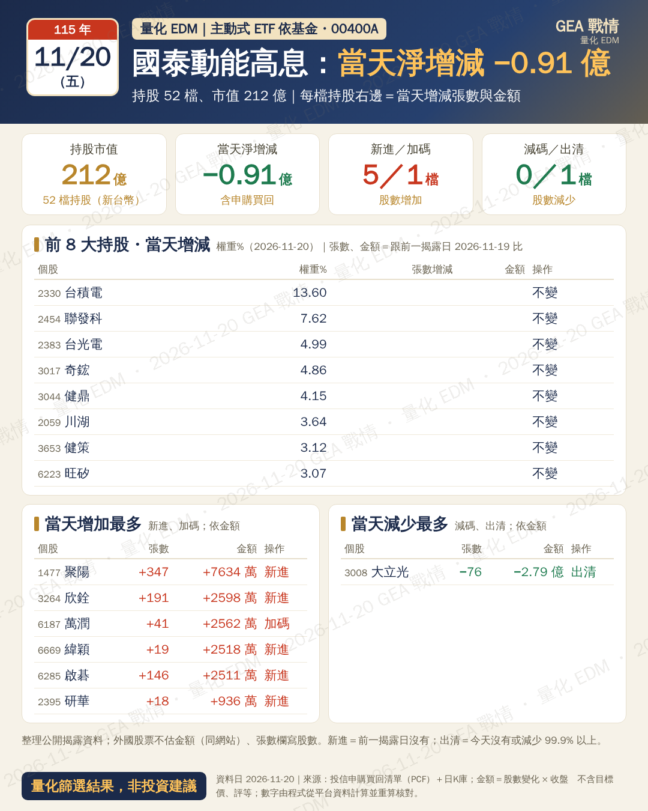
核對通過 00400A：7 筆金額用 PCF 原檔股數差 × daily.npz 收盤重算、標的集合比對、加總＝基金淨額；8 檔權重對 PCF 2026-11-20 原檔
・正式版同一段 build()
主動式 ETF 依基金・00985A 野村臺灣50（資料日 2026-11-20）下載 PNG
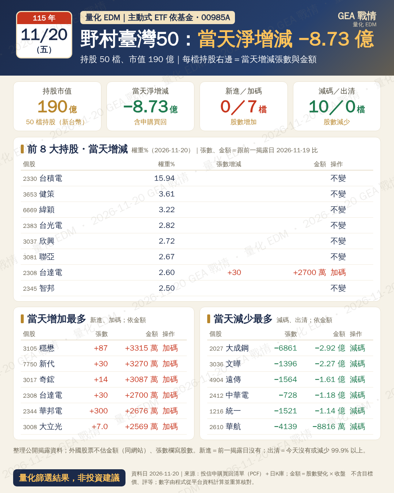
核對通過 00985A：17 筆金額用 PCF 原檔股數差 × daily.npz 收盤重算、標的集合比對、加總＝基金淨額；8 檔權重對 PCF 2026-11-20 原檔
・正式版同一段 build()
主動式 ETF 依基金・00407A 凱基台灣（資料日 2026-11-20）下載 PNG
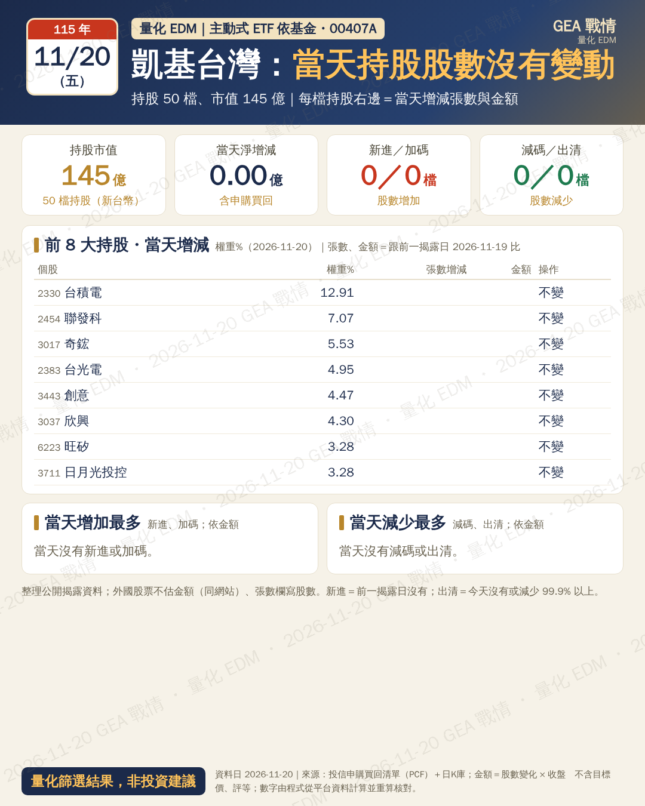
核對通過 00407A：0 筆金額用 PCF 原檔股數差 × daily.npz 收盤重算、標的集合比對、加總＝基金淨額；8 檔權重對 PCF 2026-11-20 原檔
・正式版同一段 build()
主動式 ETF 依基金・00405A 富邦台灣龍耀（資料日 2026-11-20）下載 PNG
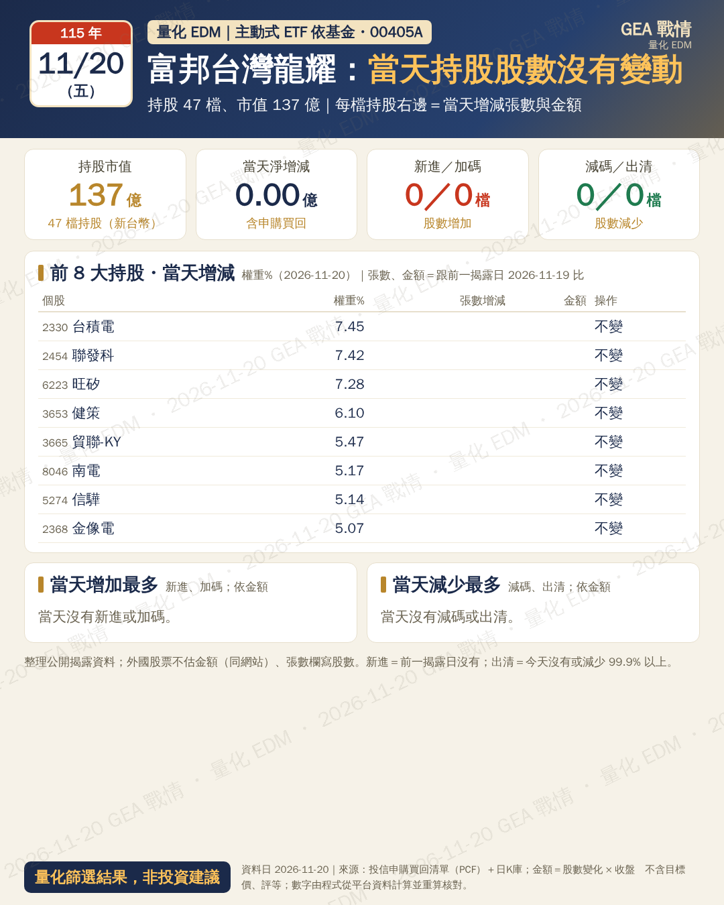
核對通過 00405A：0 筆金額用 PCF 原檔股數差 × daily.npz 收盤重算、標的集合比對、加總＝基金淨額；8 檔權重對 PCF 2026-11-20 原檔
・正式版同一段 build()
主動式 ETF 依基金・00980A 野村臺灣優選（資料日 2026-11-20）下載 PNG
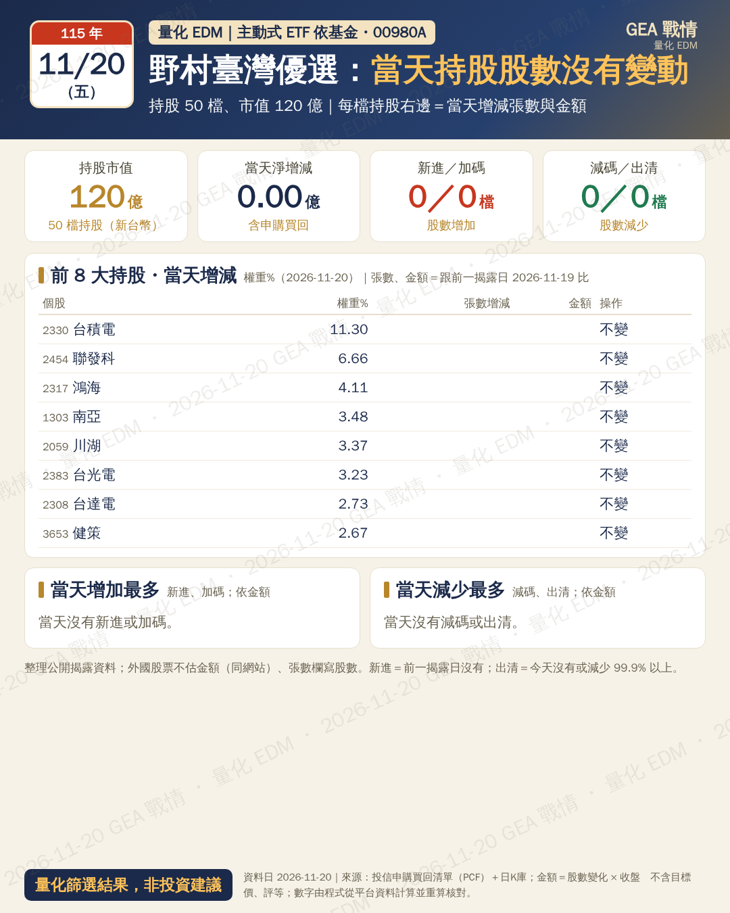
核對通過 00980A：0 筆金額用 PCF 原檔股數差 × daily.npz 收盤重算、標的集合比對、加總＝基金淨額；8 檔權重對 PCF 2026-11-20 原檔
・正式版同一段 build()
主動式 ETF 依基金・00415A 群益核心50（資料日 2026-11-20）下載 PNG
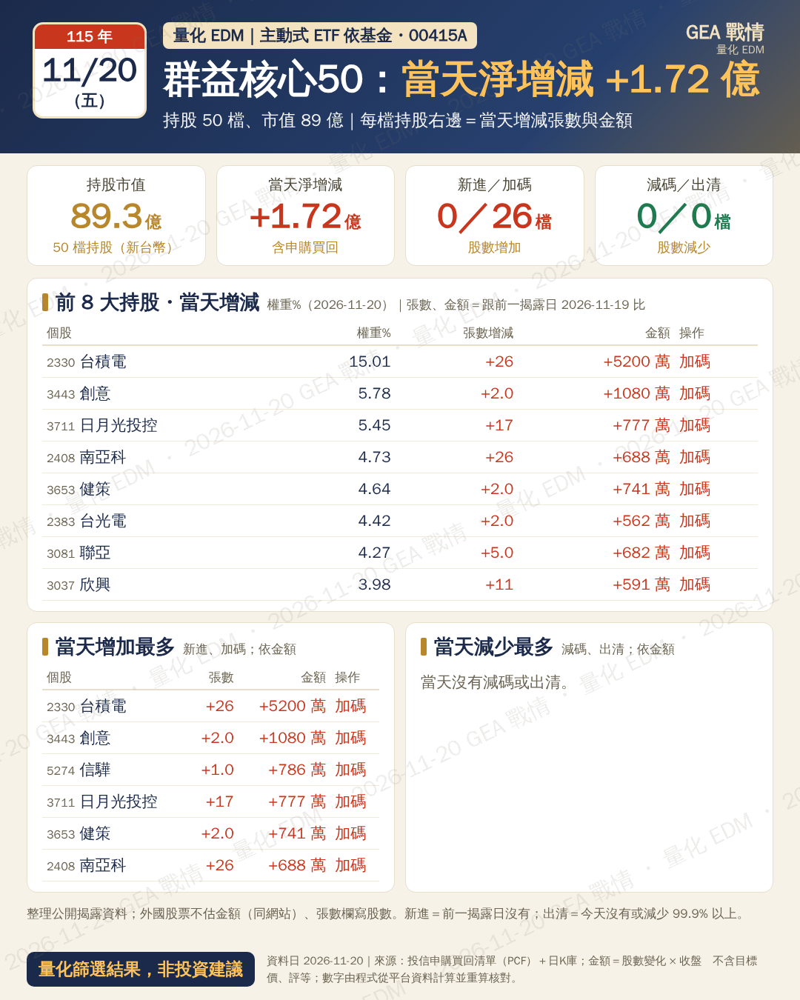
核對通過 00415A：26 筆金額用 PCF 原檔股數差 × daily.npz 收盤重算、標的集合比對、加總＝基金淨額；8 檔權重對 PCF 2026-11-20 原檔
・正式版同一段 build()
主動式 ETF 依基金・00984A 安聯台灣高息（資料日 2026-11-20）下載 PNG
核對通過 00984A：0 筆金額用 PCF 原檔股數差 × daily.npz 收盤重算、標的集合比對、加總＝基金淨額；8 檔權重對 PCF 2026-11-20 原檔
・正式版同一段 build()
主動式 ETF 依基金・00999A 野村臺灣高息（資料日 2026-11-20）下載 PNG
核對通過 00999A：0 筆金額用 PCF 原檔股數差 × daily.npz 收盤重算、標的集合比對、加總＝基金淨額；8 檔權重對 PCF 2026-11-20 原檔
・正式版同一段 build()
主動式 ETF 依基金・ETF27 復華台灣新星式ETF基金（資料日 2026-11-20）下載 PNG
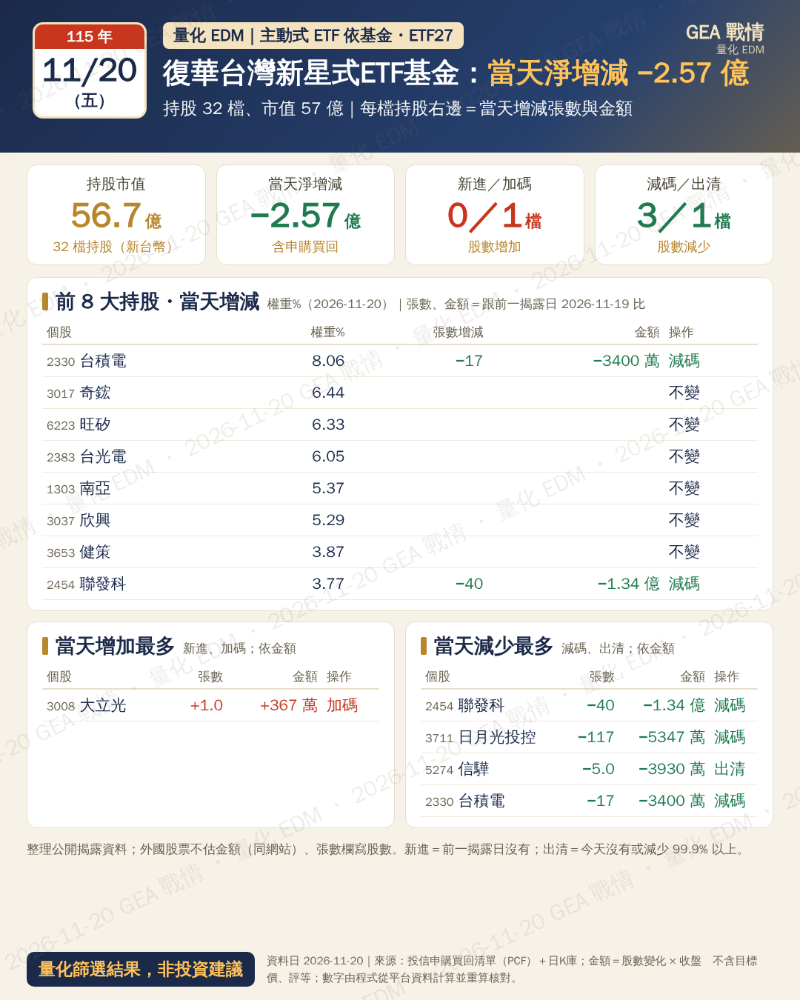
核對通過 ETF27：5 筆金額用 PCF 原檔股數差 × daily.npz 收盤重算、標的集合比對、加總＝基金淨額；8 檔權重對 PCF 2026-11-20 原檔
・正式版同一段 build()
主動式 ETF 依基金・00993A 安聯台灣（資料日 2026-11-20）下載 PNG
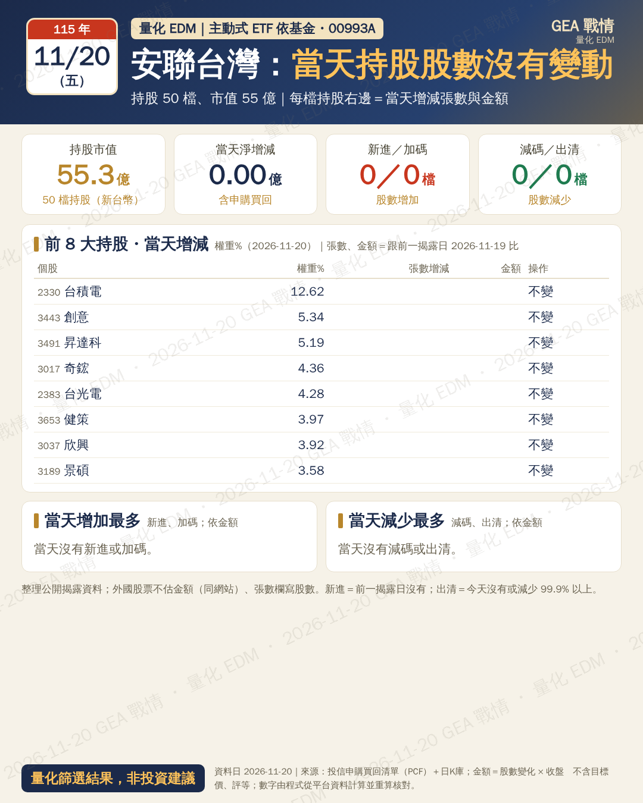
核對通過 00993A：0 筆金額用 PCF 原檔股數差 × daily.npz 收盤重算、標的集合比對、加總＝基金淨額；8 檔權重對 PCF 2026-11-20 原檔
・正式版同一段 build()
主動式 ETF 依基金・00411A 統一前沿科技（資料日 2026-11-19）下載 PNG
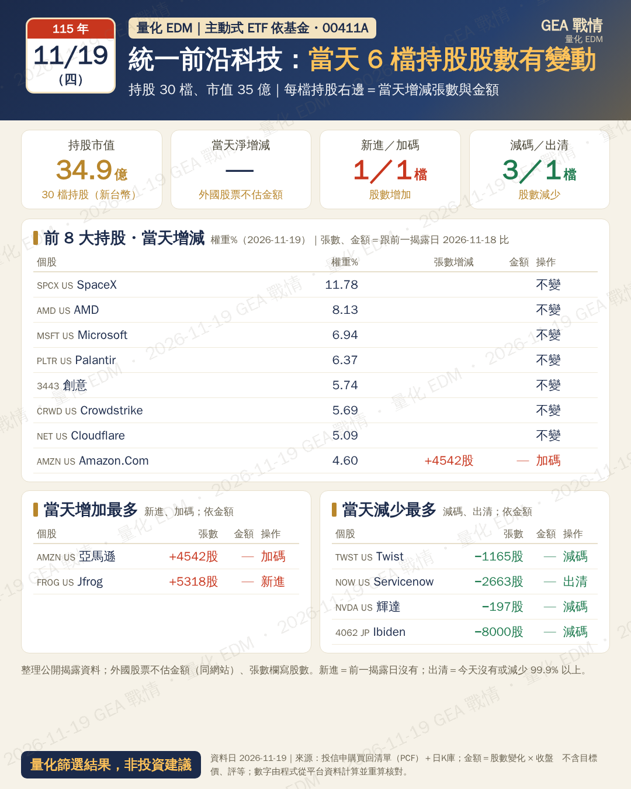
核對通過 00411A：0 筆金額用 PCF 原檔股數差 × daily.npz 收盤重算、標的集合比對、加總＝基金淨額；8 檔權重對 PCF 2026-11-19 原檔
・正式版同一段 build()
主動式 ETF 依基金・00990A 元大AI新經濟（資料日 2026-11-19）下載 PNG
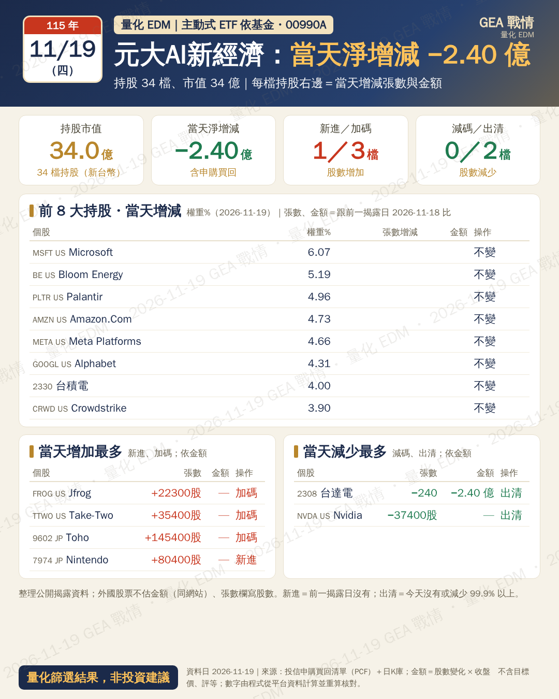
核對通過 00990A：1 筆金額用 PCF 原檔股數差 × daily.npz 收盤重算、標的集合比對、加總＝基金淨額；8 檔權重對 PCF 2026-11-19 原檔
・正式版同一段 build()
主動式 ETF 依基金・00401A 摩根台灣鑫收益（資料日 2026-11-20）下載 PNG
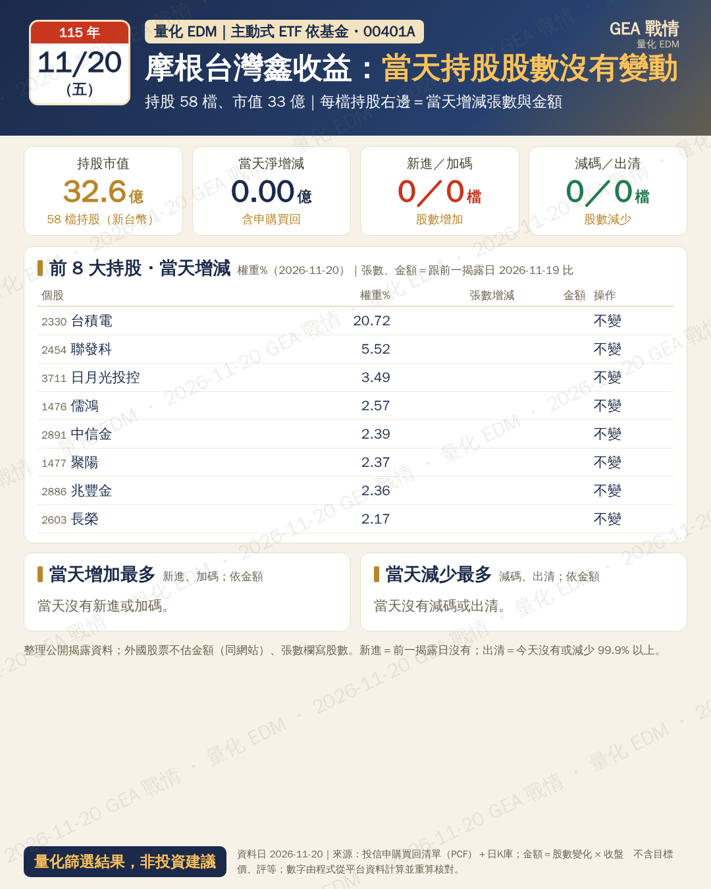
核對通過 00401A：0 筆金額用 PCF 原檔股數差 × daily.npz 收盤重算、標的集合比對、加總＝基金淨額；8 檔權重對 PCF 2026-11-20 原檔
・正式版同一段 build()
主動式 ETF 依基金・00412A 安聯亞半導體（資料日 2026-11-19）下載 PNG
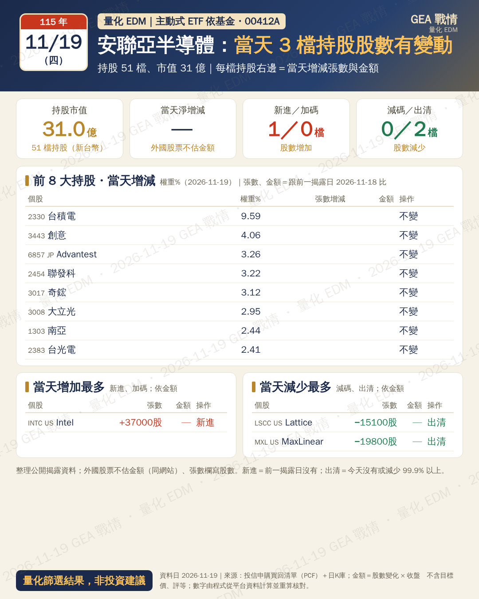
核對通過 00412A：0 筆金額用 PCF 原檔股數差 × daily.npz 收盤重算、標的集合比對、加總＝基金淨額；8 檔權重對 PCF 2026-11-19 原檔
・正式版同一段 build()
主動式 ETF 依基金・00404A 聯博動能50（資料日 2026-11-20）下載 PNG
核對通過 00404A：0 筆金額用 PCF 原檔股數差 × daily.npz 收盤重算、標的集合比對、加總＝基金淨額；8 檔權重對 PCF 2026-11-20 原檔
・正式版同一段 build()
主動式 ETF 依基金・00995A 中信台灣卓越（資料日 2026-11-20）下載 PNG
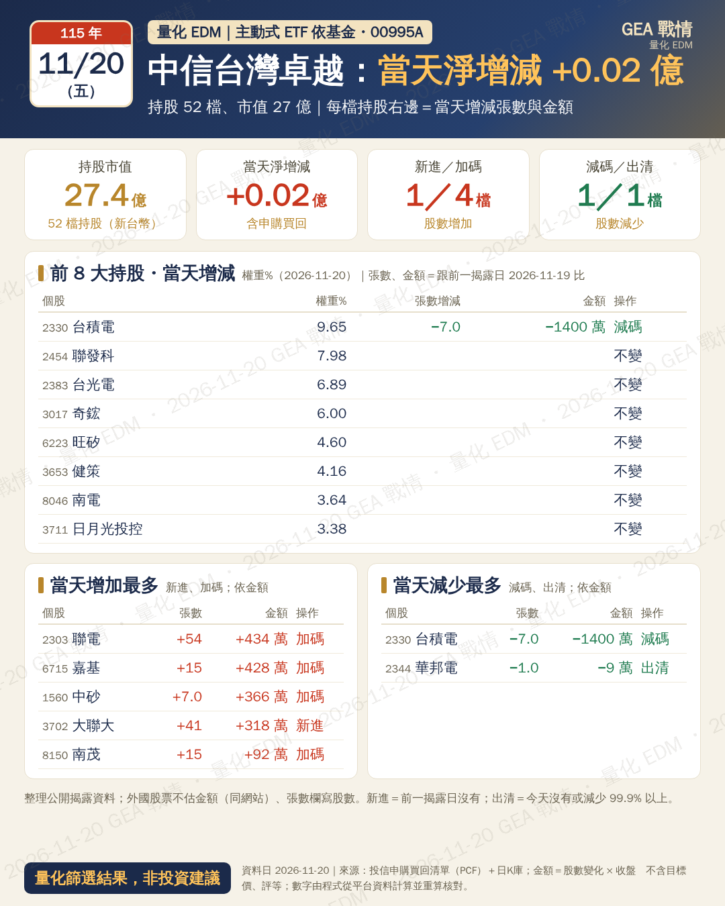
核對通過 00995A：7 筆金額用 PCF 原檔股數差 × daily.npz 收盤重算、標的集合比對、加總＝基金淨額；8 檔權重對 PCF 2026-11-20 原檔
・正式版同一段 build()
主動式 ETF 依基金・00994A 第一金台股優（資料日 2026-11-20）下載 PNG
核對通過 00994A：0 筆金額用 PCF 原檔股數差 × daily.npz 收盤重算、標的集合比對、加總＝基金淨額；8 檔權重對 PCF 2026-11-20 原檔
・正式版同一段 build()
主動式 ETF 依基金・00987A 台新優勢成長（資料日 2026-11-20）下載 PNG
核對通過 00987A：1 筆金額用 PCF 原檔股數差 × daily.npz 收盤重算、標的集合比對、加總＝基金淨額；8 檔權重對 PCF 2026-11-20 原檔
・正式版同一段 build()
主動式 ETF 依基金・00989A 摩根美國科技（資料日 2026-11-19）下載 PNG
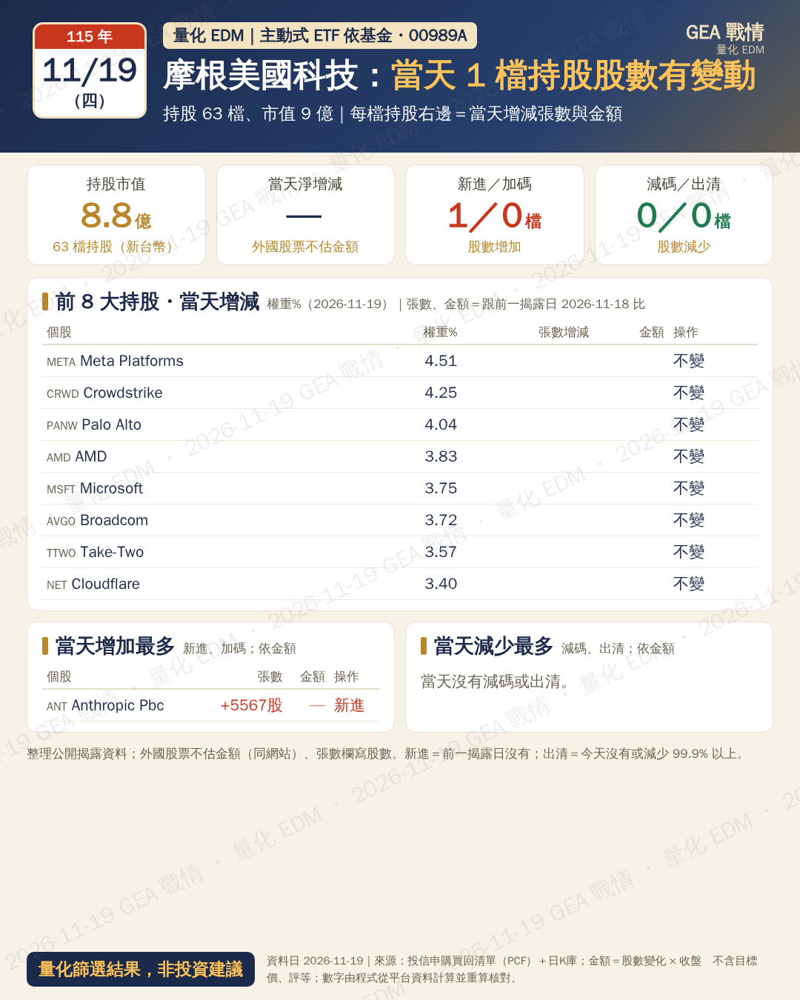
核對通過 00989A：0 筆金額用 PCF 原檔股數差 × daily.npz 收盤重算、標的集合比對、加總＝基金淨額；8 檔權重對 PCF 2026-11-19 原檔
・正式版同一段 build()
主動式 ETF 依基金・00408A 第一金優股息（資料日 2026-11-20）下載 PNG
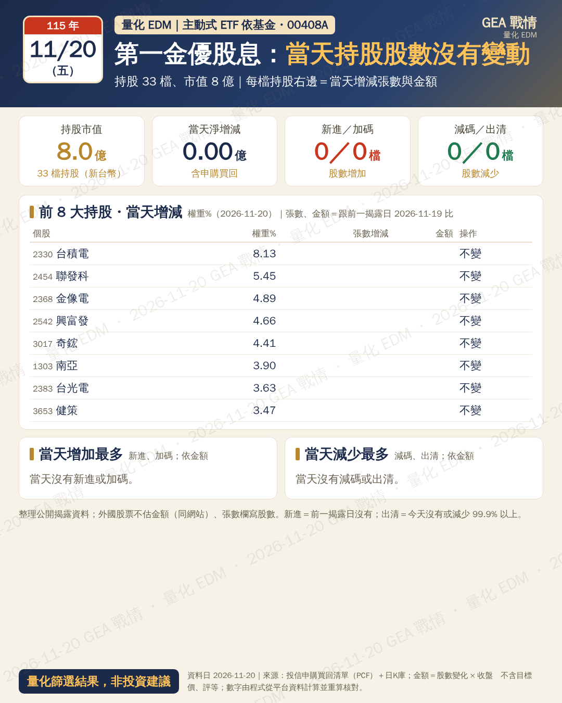
核對通過 00408A：0 筆金額用 PCF 原檔股數差 × daily.npz 收盤重算、標的集合比對、加總＝基金淨額；8 檔權重對 PCF 2026-11-20 原檔
・正式版同一段 build()
主動式 ETF 依基金・00997A 群益美國增長（資料日 2026-11-19）下載 PNG
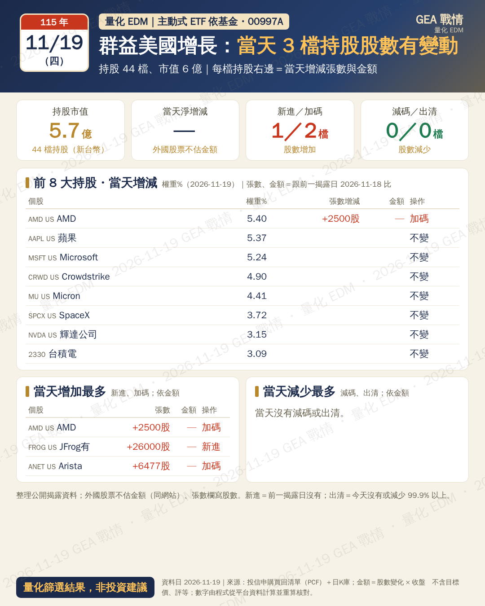
核對通過 00997A：0 筆金額用 PCF 原檔股數差 × daily.npz 收盤重算、標的集合比對、加總＝基金淨額；8 檔權重對 PCF 2026-11-19 原檔
・正式版同一段 build()
主動式 ETF 依基金・00986A 台新龍頭成長（資料日 2026-11-20）下載 PNG
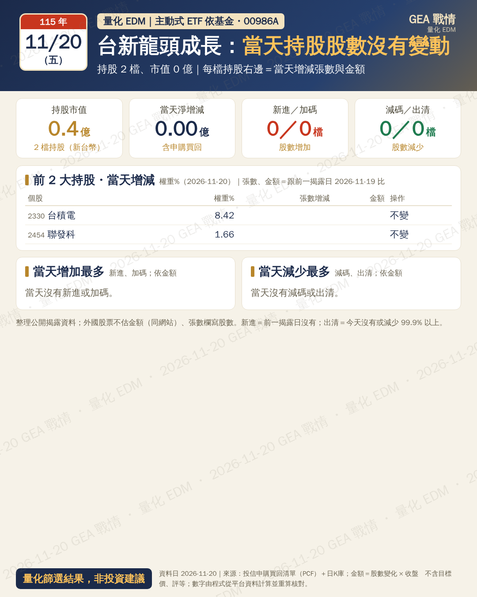
核對通過 00986A：0 筆金額用 PCF 原檔股數差 × daily.npz 收盤重算、標的集合比對、加總＝基金淨額；2 檔權重對 PCF 2026-11-20 原檔
・正式版同一段 build()
主動式 ETF 依基金・00983A 中信ARK創新（資料日 2026-11-19）下載 PNG
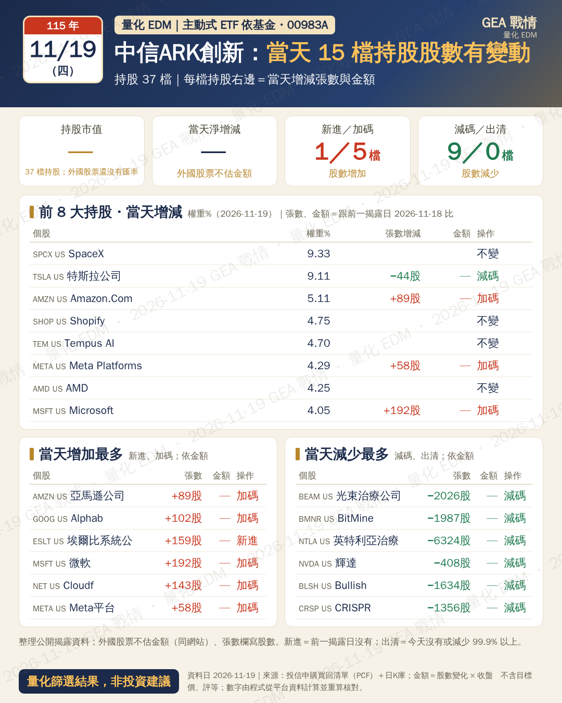
核對通過 00983A：0 筆金額用 PCF 原檔股數差 × daily.npz 收盤重算、標的集合比對、加總＝基金淨額；8 檔權重對 PCF 2026-11-19 原檔
・正式版同一段 build()
主動式 ETF 依基金・00402A 安聯美國科技（資料日 2026-11-19）下載 PNG
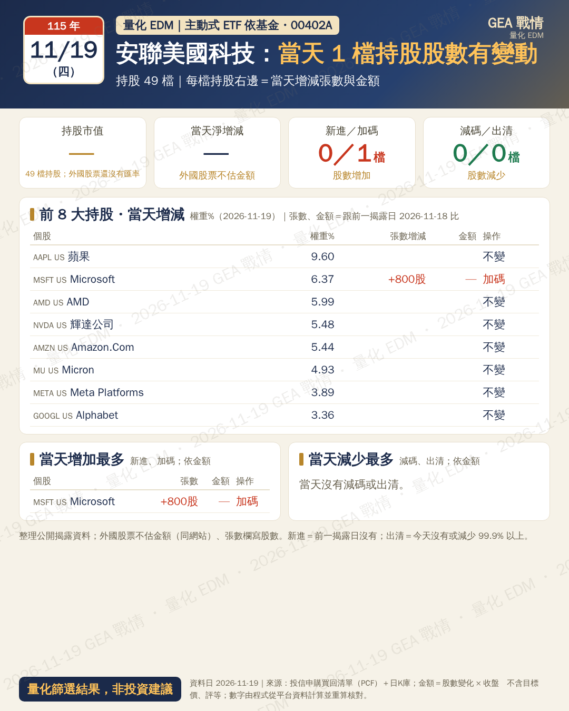
核對通過 00402A：0 筆金額用 PCF 原檔股數差 × daily.npz 收盤重算、標的集合比對、加總＝基金淨額；8 檔權重對 PCF 2026-11-19 原檔
・正式版同一段 build()
主動式 ETF 依基金・00981D 中信非投等債（資料日 2026-11-19）下載 PNG
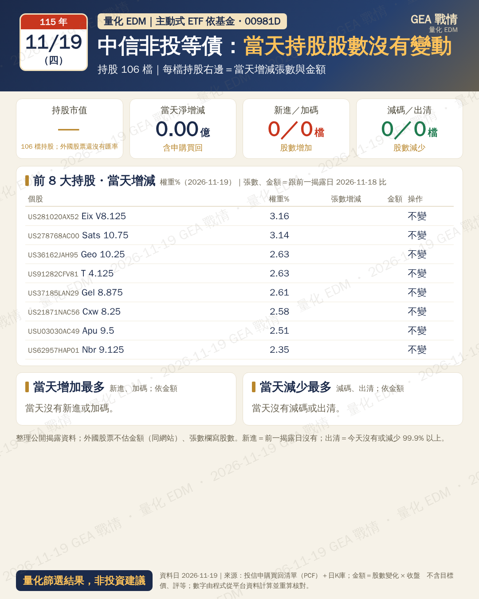
核對通過 00981D：0 筆金額用 PCF 原檔股數差 × daily.npz 收盤重算、標的集合比對、加總＝基金淨額；8 檔權重對 PCF 2026-11-19 原檔
・正式版同一段 build()
主動式 ETF 推估成本・00981A 統一台股增長（資料日 2026-11-20）下載 PNG
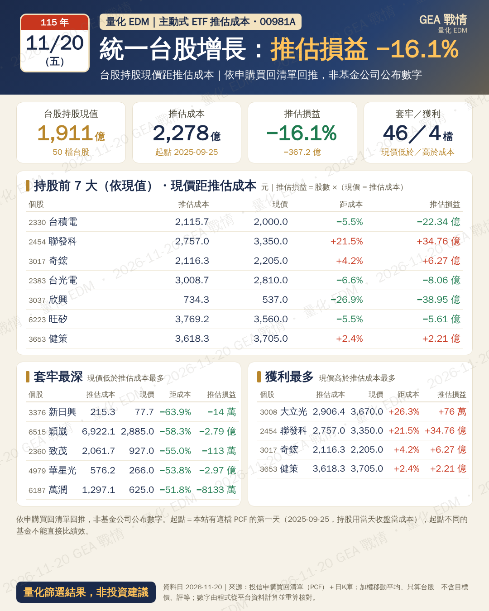
核對通過 00981A：50 檔持股用 PCF 原檔＋daily.npz 成交均價另行重算股數與推估成本；現價對收盤；現值、成本合計逐檔加總
・正式版同一段 build()
主動式 ETF 推估成本・00406A 中信台灣收益（資料日 2026-11-20）下載 PNG
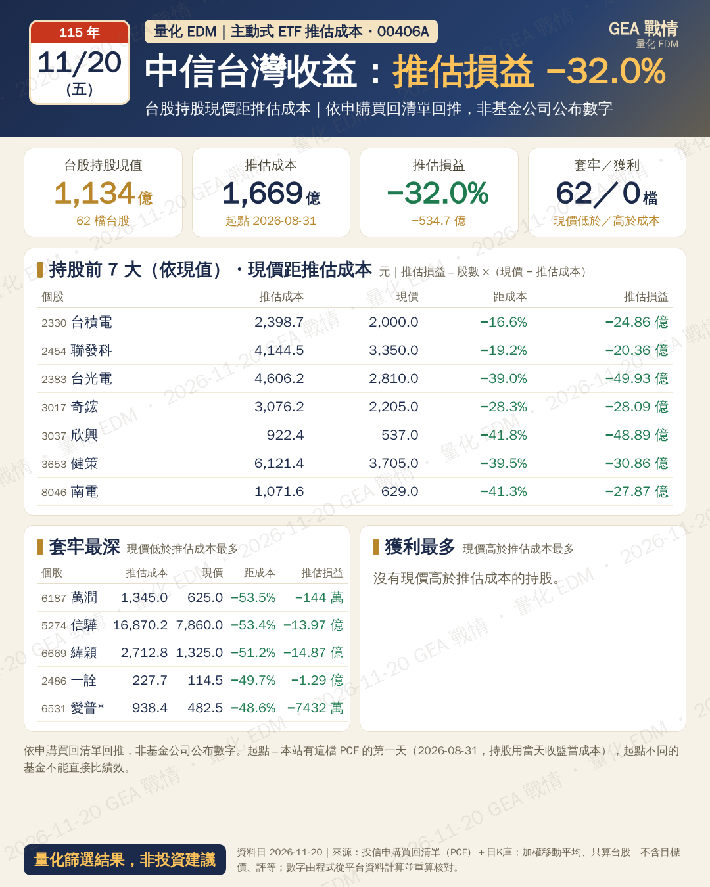
核對通過 00406A：62 檔持股用 PCF 原檔＋daily.npz 成交均價另行重算股數與推估成本；現價對收盤；現值、成本合計逐檔加總
・正式版同一段 build()
主動式 ETF 推估成本・00403A 統一升級50（資料日 2026-11-20）下載 PNG
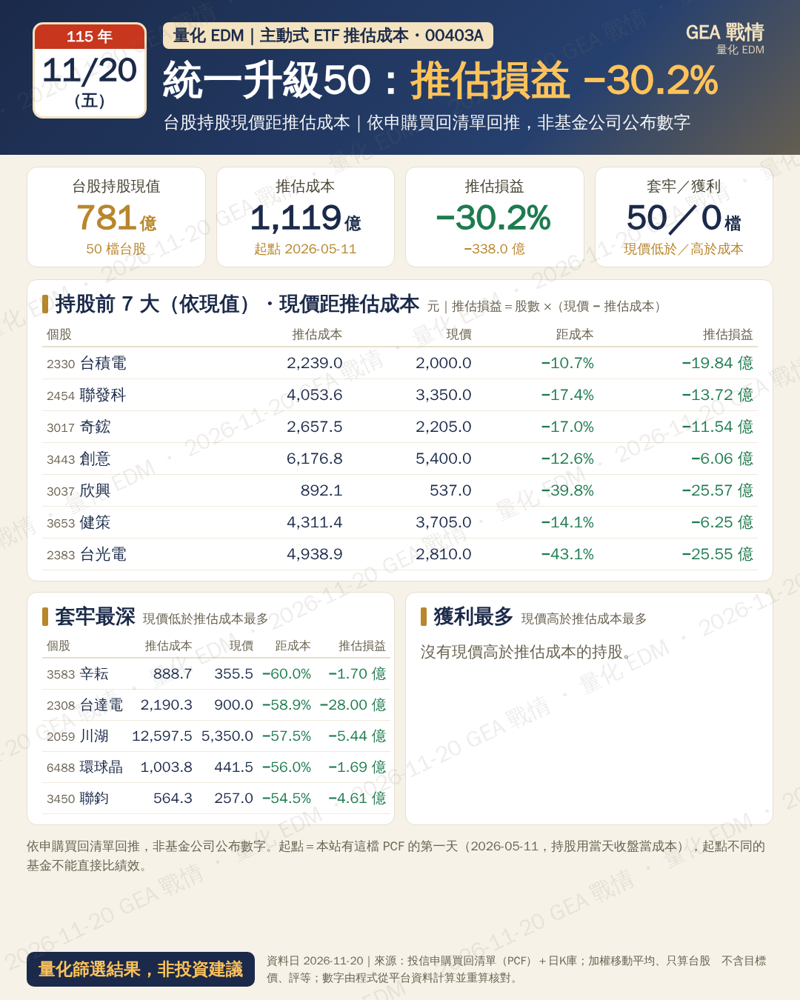
核對通過 00403A：50 檔持股用 PCF 原檔＋daily.npz 成交均價另行重算股數與推估成本；現價對收盤；現值、成本合計逐檔加總
・正式版同一段 build()
主動式 ETF 推估成本・00991A 復華未來50（資料日 2026-11-20）下載 PNG
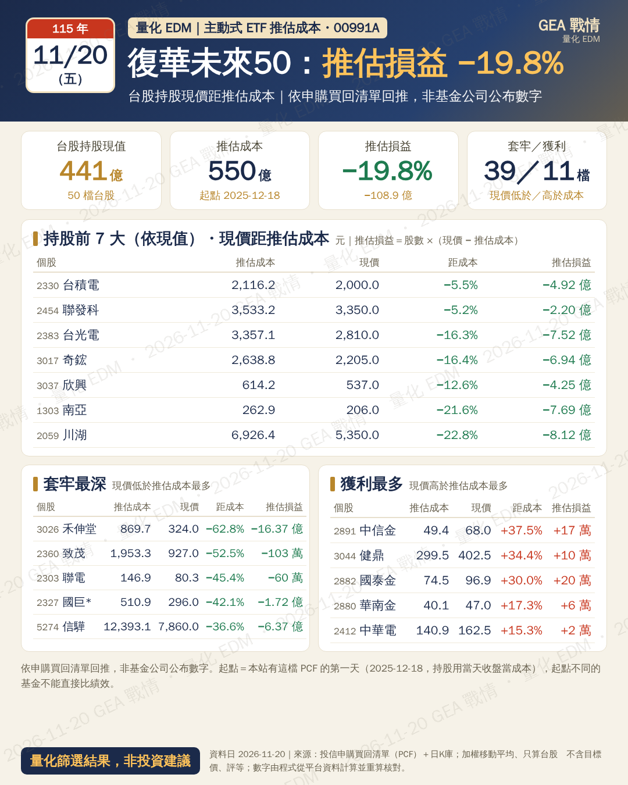
核對通過 00991A：50 檔持股用 PCF 原檔＋daily.npz 成交均價另行重算股數與推估成本；現價對收盤；現值、成本合計逐檔加總
・正式版同一段 build()
主動式 ETF 推估成本・00982A 群益台灣強棒（資料日 2026-11-20）下載 PNG
核對通過 00982A：63 檔持股用 PCF 原檔＋daily.npz 成交均價另行重算股數與推估成本；現價對收盤；現值、成本合計逐檔加總
・正式版同一段 build()
主動式 ETF 推估成本・00992A 群益科技創新（資料日 2026-11-20）下載 PNG
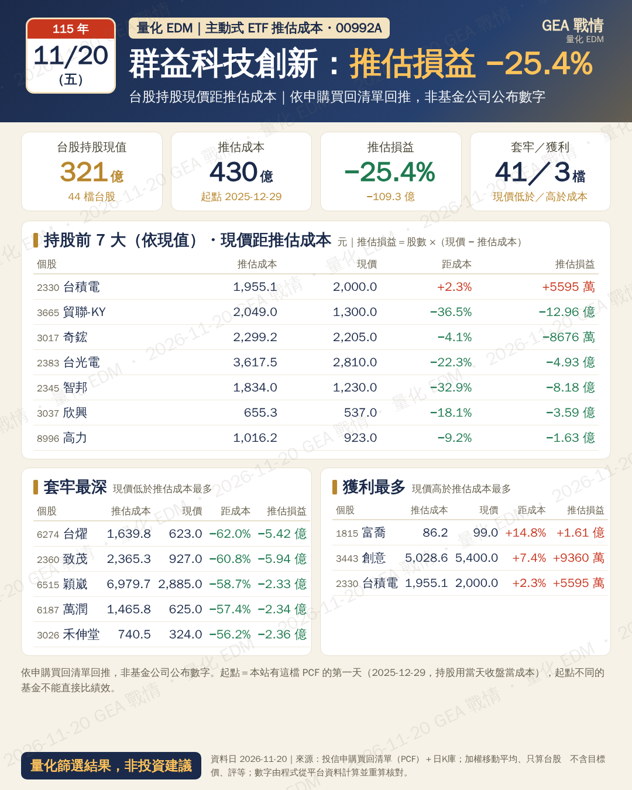
核對通過 00992A：44 檔持股用 PCF 原檔＋daily.npz 成交均價另行重算股數與推估成本；現價對收盤；現值、成本合計逐檔加總
・正式版同一段 build()
主動式 ETF 推估成本・00400A 國泰動能高息（資料日 2026-11-20）下載 PNG
核對通過 00400A：52 檔持股用 PCF 原檔＋daily.npz 成交均價另行重算股數與推估成本；現價對收盤；現值、成本合計逐檔加總
・正式版同一段 build()
主動式 ETF 推估成本・00985A 野村臺灣50（資料日 2026-11-20）下載 PNG
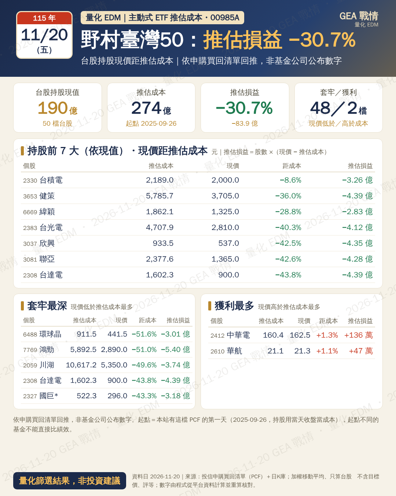
核對通過 00985A：50 檔持股用 PCF 原檔＋daily.npz 成交均價另行重算股數與推估成本；現價對收盤；現值、成本合計逐檔加總
・正式版同一段 build()
主動式 ETF 推估成本・00407A 凱基台灣（資料日 2026-11-20）下載 PNG
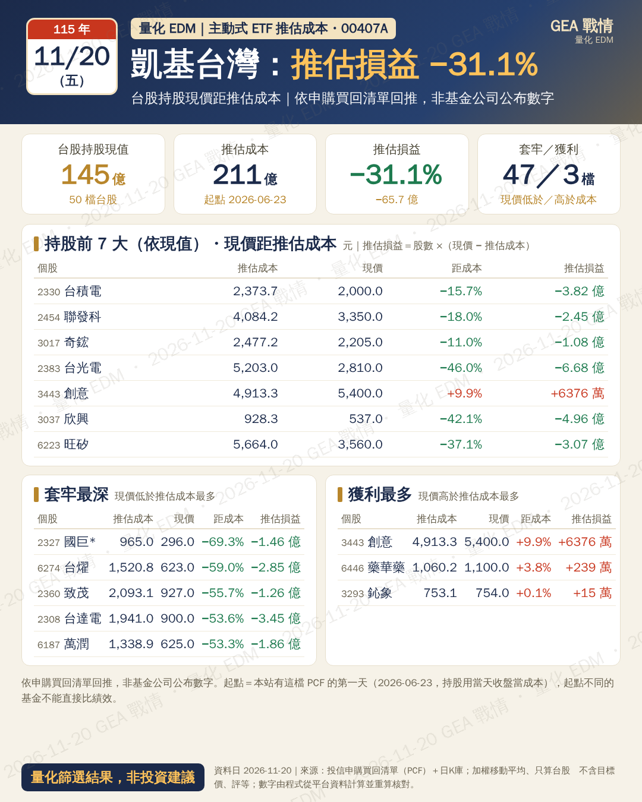
核對通過 00407A：50 檔持股用 PCF 原檔＋daily.npz 成交均價另行重算股數與推估成本；現價對收盤；現值、成本合計逐檔加總
・正式版同一段 build()
主動式 ETF 推估成本・00405A 富邦台灣龍耀（資料日 2026-11-20）下載 PNG
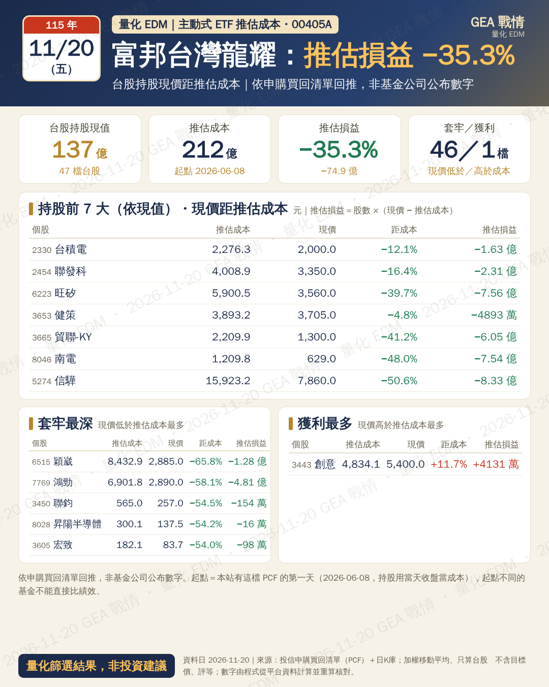
核對通過 00405A：47 檔持股用 PCF 原檔＋daily.npz 成交均價另行重算股數與推估成本；現價對收盤；現值、成本合計逐檔加總
・正式版同一段 build()
主動式 ETF 推估成本・00980A 野村臺灣優選（資料日 2026-11-20）下載 PNG
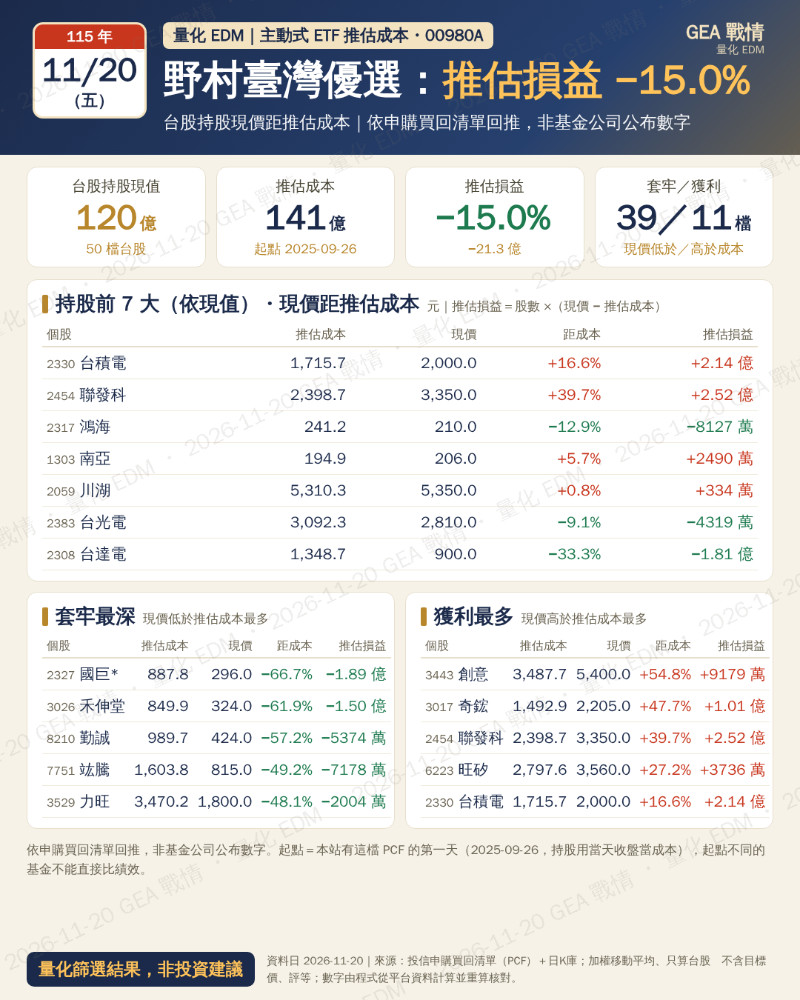
核對通過 00980A：50 檔持股用 PCF 原檔＋daily.npz 成交均價另行重算股數與推估成本；現價對收盤；現值、成本合計逐檔加總
・正式版同一段 build()
主動式 ETF 推估成本・00415A 群益核心50（資料日 2026-11-20）下載 PNG
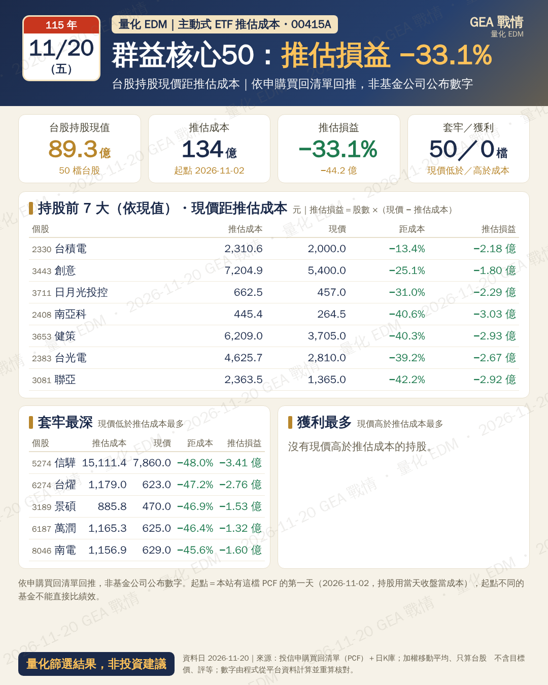
核對通過 00415A：50 檔持股用 PCF 原檔＋daily.npz 成交均價另行重算股數與推估成本；現價對收盤；現值、成本合計逐檔加總
・正式版同一段 build()
主動式 ETF 推估成本・00988A 統一全球創新（資料日 2026-11-20）下載 PNG
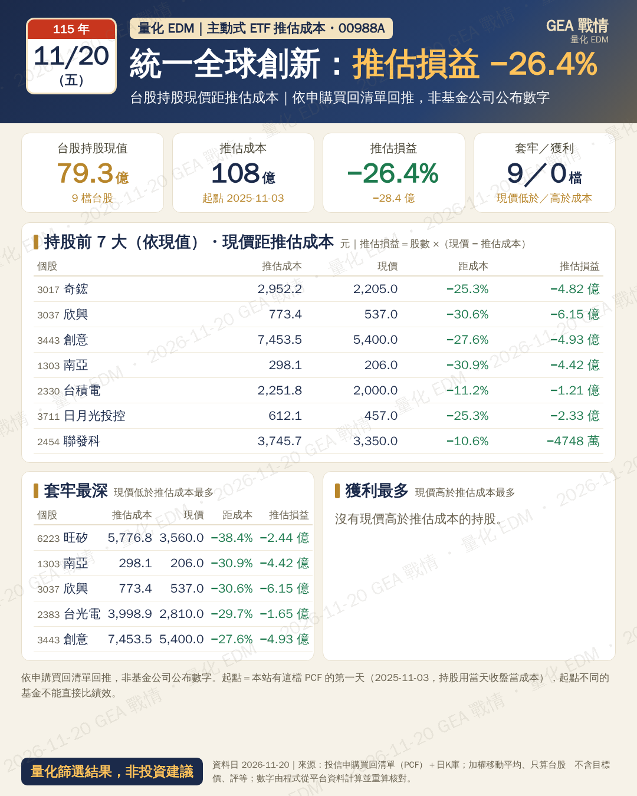
核對通過 00988A：9 檔持股用 PCF 原檔＋daily.npz 成交均價另行重算股數與推估成本；現價對收盤；現值、成本合計逐檔加總
・正式版同一段 build()
主動式 ETF 推估成本・00984A 安聯台灣高息（資料日 2026-11-20）下載 PNG
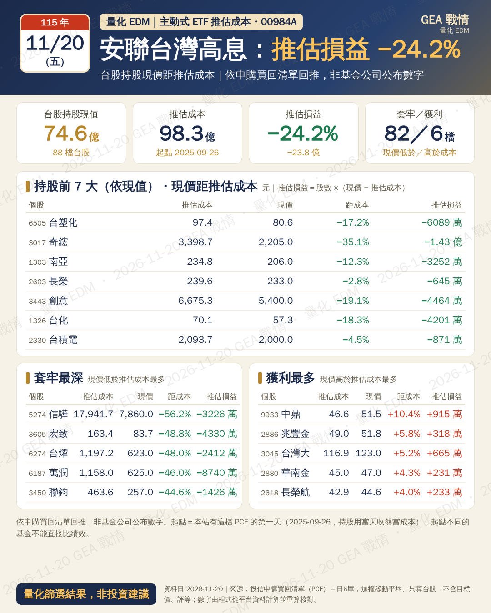
核對通過 00984A：88 檔持股用 PCF 原檔＋daily.npz 成交均價另行重算股數與推估成本；現價對收盤；現值、成本合計逐檔加總
・正式版同一段 build()
主動式 ETF 推估成本・00999A 野村臺灣高息（資料日 2026-11-20）下載 PNG
核對通過 00999A：54 檔持股用 PCF 原檔＋daily.npz 成交均價另行重算股數與推估成本；現價對收盤；現值、成本合計逐檔加總
・正式版同一段 build()
主動式 ETF 推估成本・ETF27 復華台灣新星式ETF基金（資料日 2026-11-20）下載 PNG
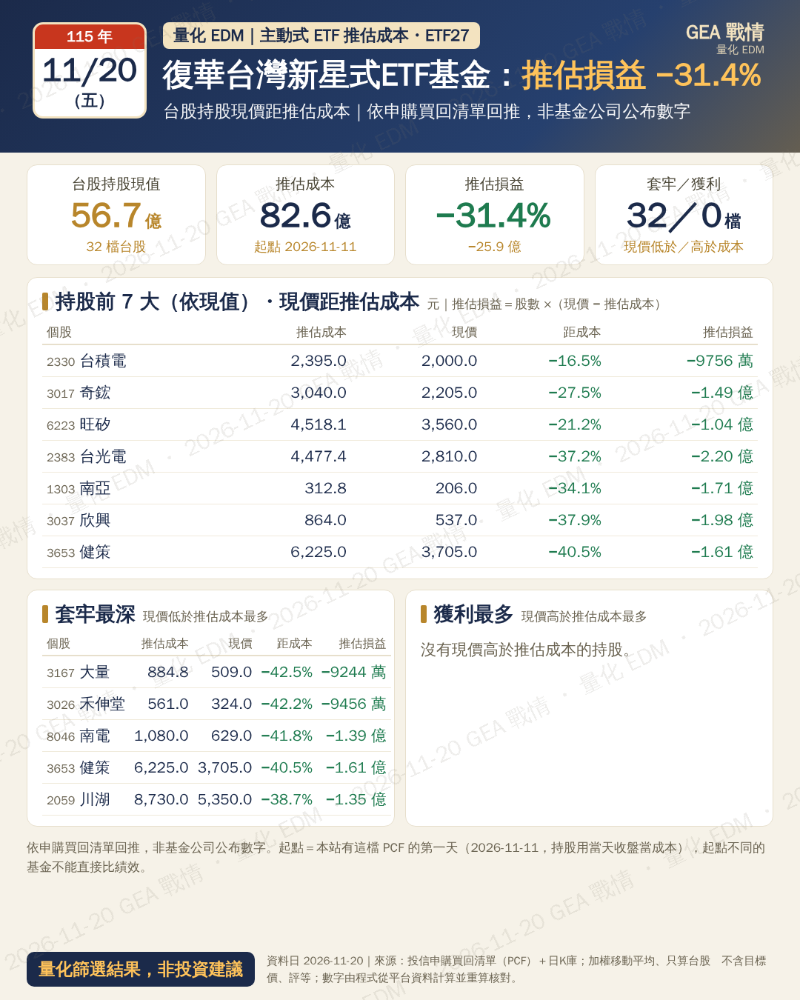
核對通過 ETF27：32 檔持股用 PCF 原檔＋daily.npz 成交均價另行重算股數與推估成本；現價對收盤；現值、成本合計逐檔加總
・正式版同一段 build()
主動式 ETF 推估成本・00993A 安聯台灣（資料日 2026-11-20）下載 PNG
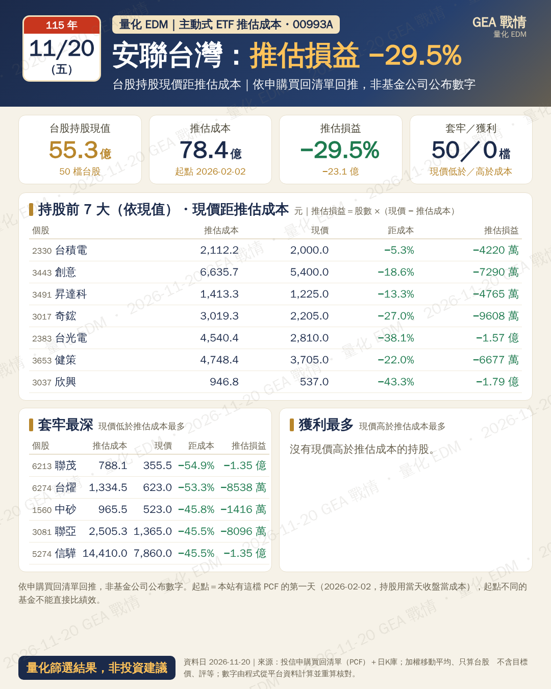
核對通過 00993A：50 檔持股用 PCF 原檔＋daily.npz 成交均價另行重算股數與推估成本；現價對收盤；現值、成本合計逐檔加總
・正式版同一段 build()
主動式 ETF 推估成本・00996A 兆豐台灣豐收（資料日 2026-11-20）下載 PNG
核對通過 00996A：48 檔持股用 PCF 原檔＋daily.npz 成交均價另行重算股數與推估成本；現價對收盤；現值、成本合計逐檔加總
・正式版同一段 build()
主動式 ETF 推估成本・00990A 元大AI新經濟（資料日 2026-11-20）下載 PNG
核對通過 00990A：7 檔持股用 PCF 原檔＋daily.npz 成交均價另行重算股數與推估成本；現價對收盤；現值、成本合計逐檔加總
・正式版同一段 build()
主動式 ETF 推估成本・00401A 摩根台灣鑫收益（資料日 2026-11-20）下載 PNG
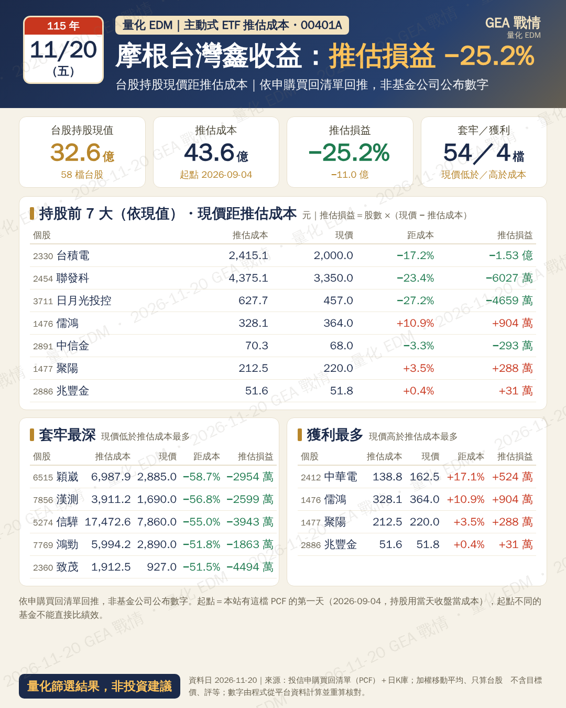
核對通過 00401A：58 檔持股用 PCF 原檔＋daily.npz 成交均價另行重算股數與推估成本；現價對收盤；現值、成本合計逐檔加總
・正式版同一段 build()
主動式 ETF 推估成本・00412A 安聯亞半導體（資料日 2026-11-20）下載 PNG
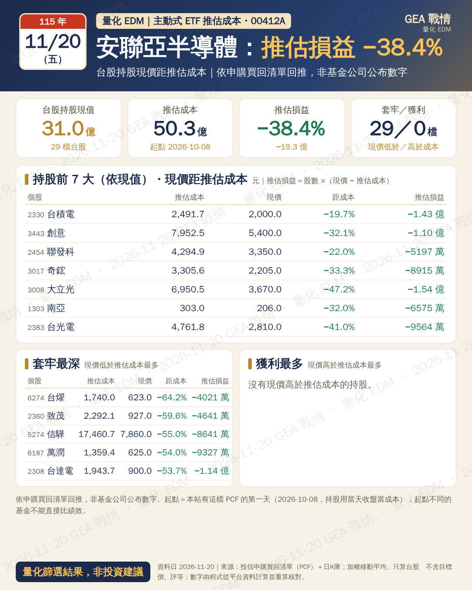
核對通過 00412A：29 檔持股用 PCF 原檔＋daily.npz 成交均價另行重算股數與推估成本；現價對收盤；現值、成本合計逐檔加總
・正式版同一段 build()
主動式 ETF 推估成本・00404A 聯博動能50（資料日 2026-11-20）下載 PNG
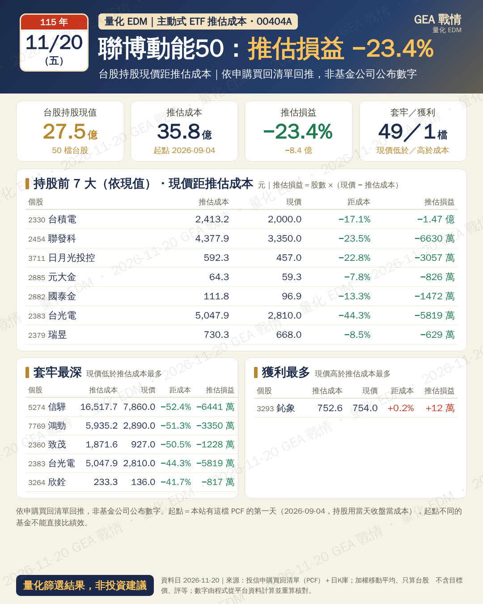
核對通過 00404A：50 檔持股用 PCF 原檔＋daily.npz 成交均價另行重算股數與推估成本；現價對收盤；現值、成本合計逐檔加總
・正式版同一段 build()
主動式 ETF 推估成本・00995A 中信台灣卓越（資料日 2026-11-20）下載 PNG
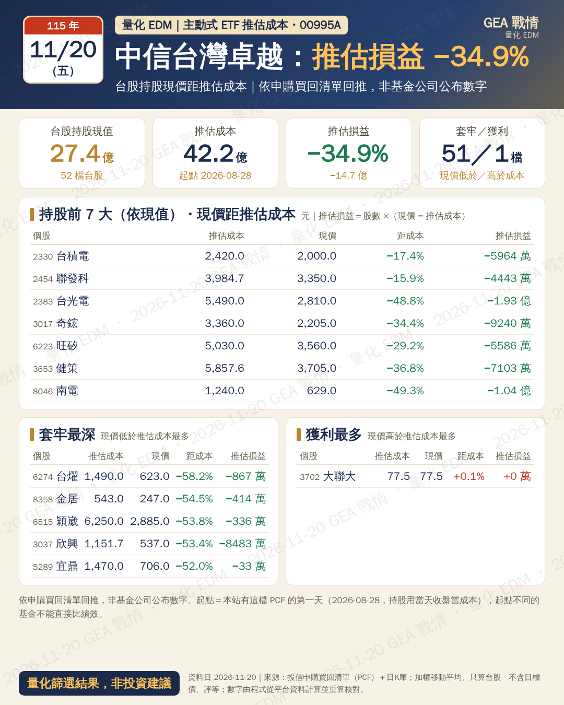
核對通過 00995A：52 檔持股用 PCF 原檔＋daily.npz 成交均價另行重算股數與推估成本；現價對收盤；現值、成本合計逐檔加總
・正式版同一段 build()
主動式 ETF 推估成本・00994A 第一金台股優（資料日 2026-11-20）下載 PNG
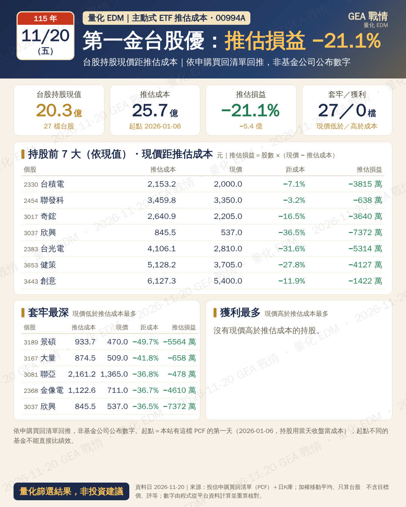
核對通過 00994A：27 檔持股用 PCF 原檔＋daily.npz 成交均價另行重算股數與推估成本；現價對收盤；現值、成本合計逐檔加總
・正式版同一段 build()
主動式 ETF 推估成本・00987A 台新優勢成長（資料日 2026-11-20）下載 PNG
核對通過 00987A：24 檔持股用 PCF 原檔＋daily.npz 成交均價另行重算股數與推估成本；現價對收盤；現值、成本合計逐檔加總
・正式版同一段 build()
主動式 ETF 推估成本・00408A 第一金優股息（資料日 2026-11-20）下載 PNG
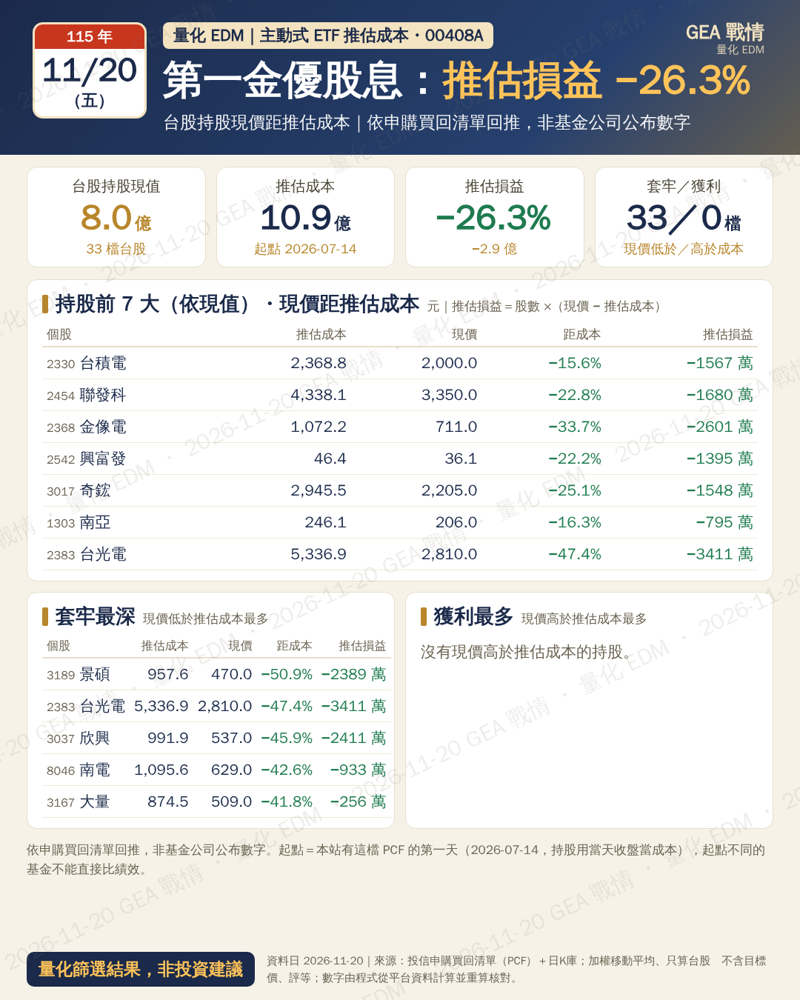
核對通過 00408A：33 檔持股用 PCF 原檔＋daily.npz 成交均價另行重算股數與推估成本；現價對收盤；現值、成本合計逐檔加總
・正式版同一段 build()
主動式 ETF 推估成本・00997A 群益美國增長（資料日 2026-11-20）下載 PNG
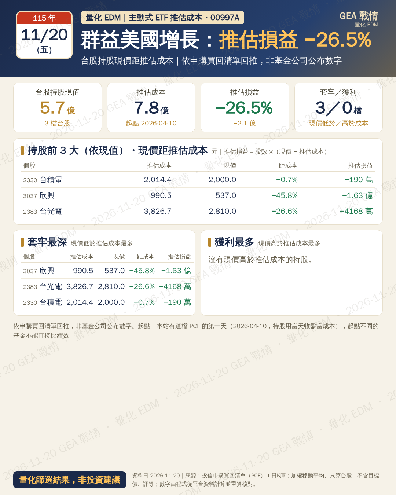
核對通過 00997A：3 檔持股用 PCF 原檔＋daily.npz 成交均價另行重算股數與推估成本；現價對收盤；現值、成本合計逐檔加總
・正式版同一段 build()
主動式 ETF 推估成本・00411A 統一前沿科技（資料日 2026-11-20）下載 PNG
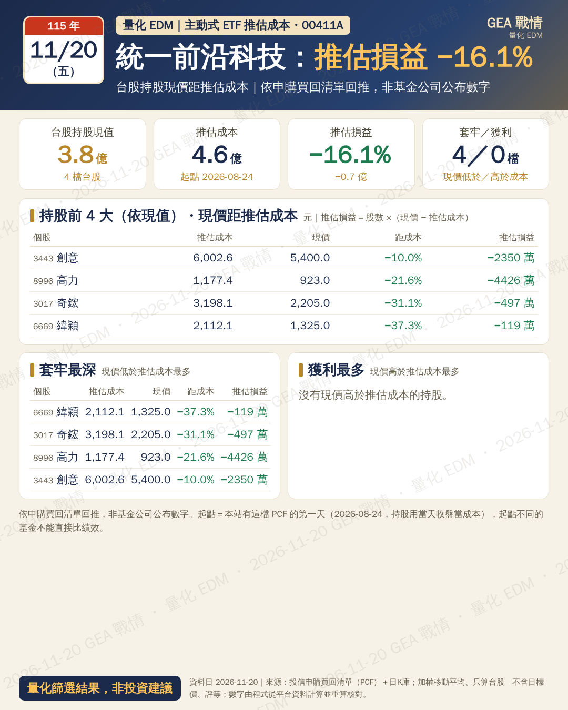
核對通過 00411A：4 檔持股用 PCF 原檔＋daily.npz 成交均價另行重算股數與推估成本；現價對收盤；現值、成本合計逐檔加總
・正式版同一段 build()
主動式 ETF 推估成本・00986A 台新龍頭成長（資料日 2026-11-20）下載 PNG
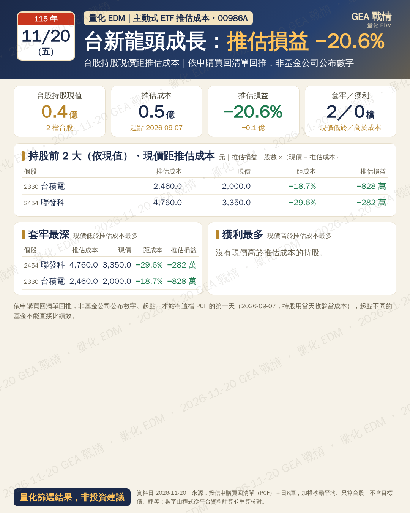
核對通過 00986A：2 檔持股用 PCF 原檔＋daily.npz 成交均價另行重算股數與推估成本；現價對收盤；現值、成本合計逐檔加總
・正式版同一段 build()